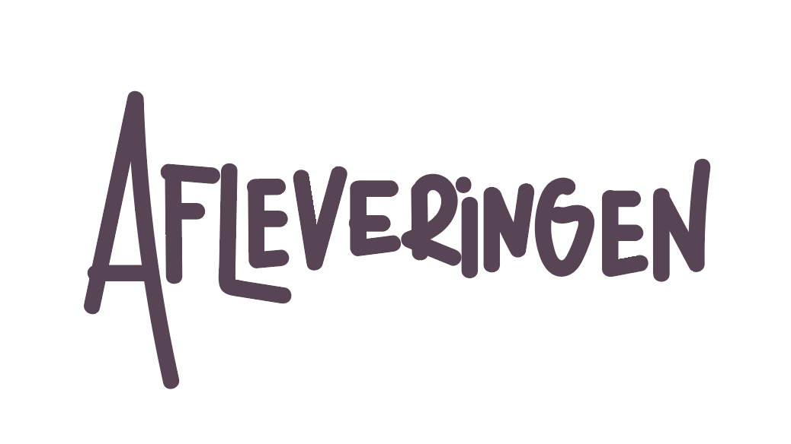

afl
NIEUWSTE AFLEVERING
Vriendenruzies: Het drama waar je later om lacht
Iedereen heeft wel eens drama met vrienden, en dit biedt een kans om te reflecteren op de dynamiek van vriendschap, met humor als luchtige twist.
KLIK VOOR MEERcontainer-aflevering
Aflevering 1: Welkom bij LIFECAST: Dit is waarom jij hier moet zijn!
Deze aflevering introduceert LIFECAST, de hosten en wat luisteraars kunnen verwachten van de komende afleveringen. Het stelt de toon, doelen, en thema's vast.
KLIK VOOR MEERAflevering 2: School Fails: Lachen om je gênante momenten
Iedereen heeft grappige of gênante herinneringen aan school, en dit maakt het een perfect onderwerp om de luisteraars direct te betrekken en te laten lachen.
KLIK VOOR MEERAflevering 3: Beestenboel: De gekste dingen die je huisdier heeft gedaan
Mensen houden van dierenverhalen, vooral als ze grappig en herkenbaar zijn. Dit trekt een breed publiek en zorgt voor een luchtige sfeer.
KLIK VOOR MEERAflevering 4: Familieproblemen: Als bloed niet altijd dikker is dan water
Familie biedt altijd genoeg materiaal voor zowel drama als humor. Het is herkenbaar voor iedereen en roept veel emoties op.
KLIK VOOR MEERAflevering 5: Funny Revenge Stories
Wraakverhalen kunnen zowel grappig als bevredigend zijn. Ze bieden een perfecte balans tussen humor en spanning.
KLIK VOOR MEERAflevering 6: Vriendenruzies: Het drama waar je later om lacht
Iedereen heeft wel eens drama met vrienden, en dit biedt een kans om te reflecteren op de dynamiek van vriendschap, met humor als luchtige twist.
KLIK VOOR MEER